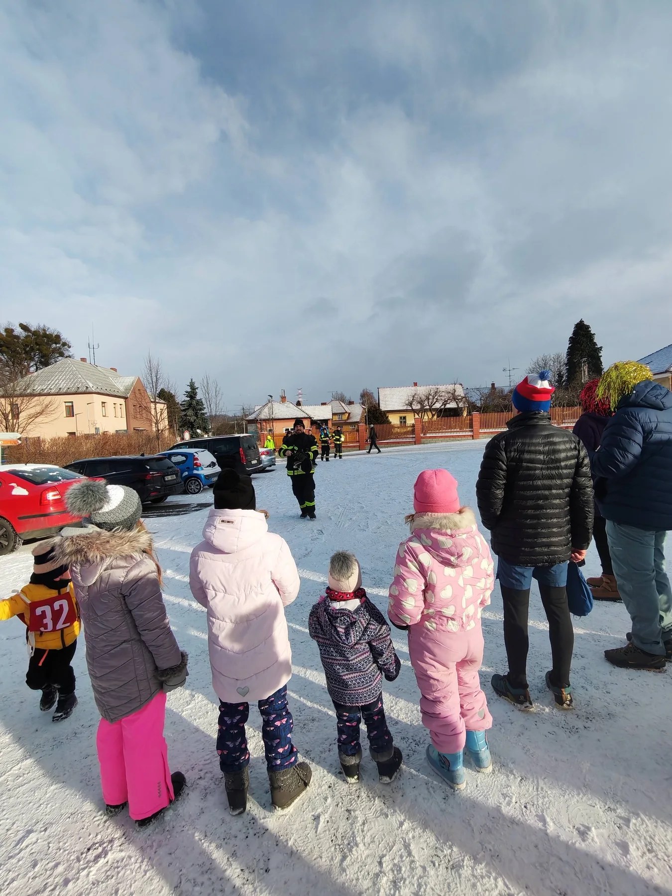

Mladí hasiči3–15 let
Mladí hasiči
Tréninky, soutěže a parta mladých hasičů.
Kategorie
Věkové kategorie
Tréninky probíhají pravidelně každou středu.
1
Přípravka
3–6 let
Středa 15:45–16:40. První kontakt s pohybem, kolektivem a hasičskými základy.
2
Mladší žáci
6–10 let
Středa 16:45–18:00. Technika, hra, koordinace a základní dovednosti.
3
Starší žáci
10–15 let
Středa 16:45–18:00. Požární sport, příprava na soutěže a větší samostatnost.

Tréninky
Tréninky během roku
V zimě tělocvična a technická příprava. V sezóně požární útok a tréninky venku.
Pro rodiče
Co děti získají
Pohyb
Pravidelný trénink, běh, koordinace a všestrannost.
Tým
Děti se učí spolehnout na ostatní a pomáhat si.
Dovednosti
Uzly, značky, vybavení, názvosloví i základy bezpečnosti.
Tradice
Přirozené zapojení do života sboru a obce.